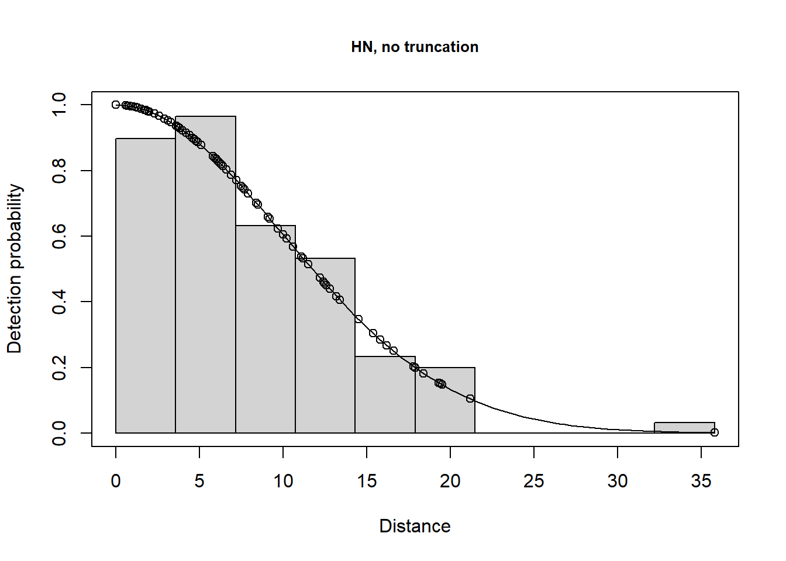
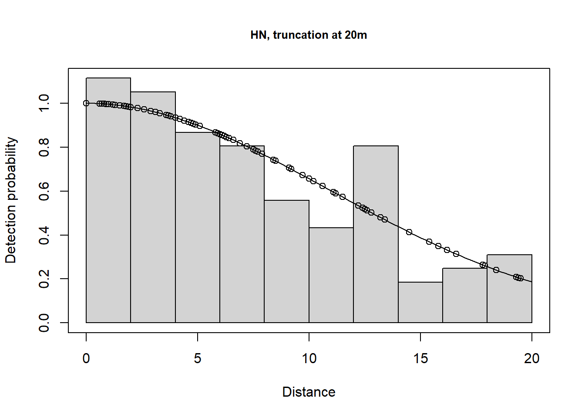
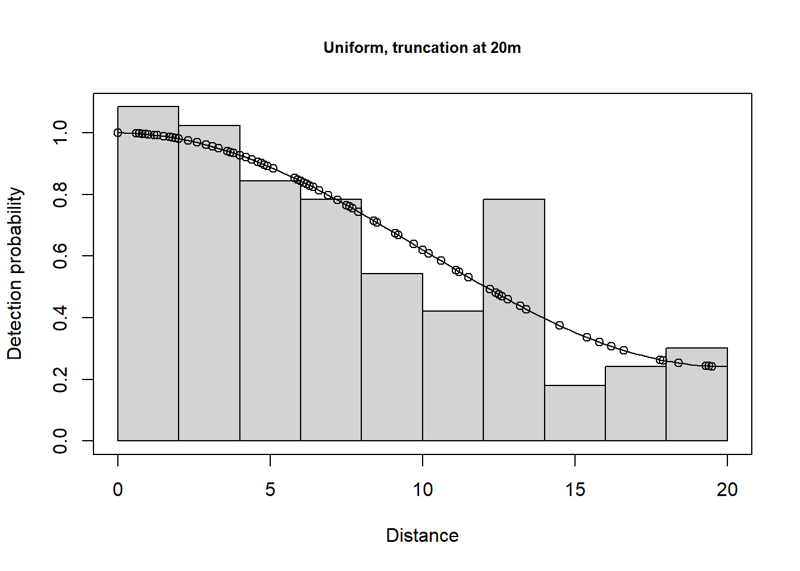
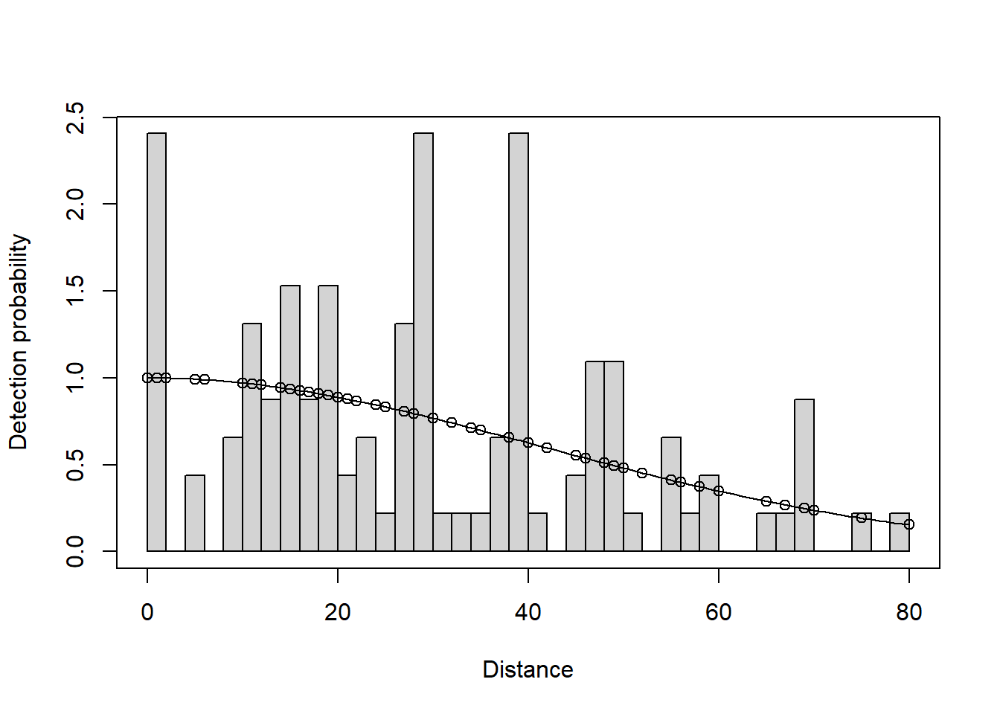

Summary for distance analysis
Number of observations : 103
Distance range : 0 - 20
Model : Half-normal key function
AIC : 599.4236
Detection function parameters
Scale coefficient(s):
estimate se
(Intercept) 2.388955 0.1176774
Estimate SE CV
Average p 0.6377021 0.05317053 0.08337832
N in covered region 161.5174244 16.52647650 0.10232008
Summary statistics:
Region Area CoveredArea Effort n k ER se.ER cv.ER
1 Default 1 1.92 48 103 12 2.145833 0.32184 0.1499837
Abundance:
Label Estimate se cv lcl ucl df
1 Total 84.12366 14.43574 0.1716014 58.86702 120.2166 18.65735
Density:
Label Estimate se cv lcl ucl df
1 Total 84.12366 14.43574 0.1716014 58.86702 120.2166 18.65735
Summary for distance analysis
Number of observations : 94
Distance range : 0 - 16.04
Model : Half-normal key function
AIC : 512.2441
Detection function parameters
Scale coefficient(s):
estimate se
(Intercept) 2.298481 0.1606186
Estimate SE CV
Average p 0.6946953 0.06767631 0.0974187
N in covered region 135.3111285 15.27178113 0.1128642
Summary statistics:
Region Area CoveredArea Effort n k ER se.ER cv.ER
1 Default 1 1.53984 48 94 12 1.958333 0.278492 0.1422087
Abundance:
Label Estimate se cv lcl ucl df
1 Total 87.8735 15.14734 0.1723767 61.68487 125.1806 23.14378
Density:
Label Estimate se cv lcl ucl df
1 Total 87.8735 15.14734 0.1723767 61.68487 125.1806 23.14378
This has excluded 11 observations. The plots are shown below.
# Fit a few different models# Half normal model, no adjustments, no truncationlt.hn <-ds(data=LTExercise, key="hn", adjustment=NULL, convert_units=conversion.factor)# Half normal model, cosine adjustments, truncation at 20mlt.hn.cos.t20m <-ds(data=LTExercise, key="hn", adjustment="cos", truncation=20, convert_units=conversion.factor)# Uniform model, cosine adjustments, truncation at 20mlt.uf.cos.t20m <-ds(data=LTExercise, key="unif", adjustment="cos", truncation=20, convert_units=conversion.factor)# Hazard rate model, no adjustments, truncation at 20mlt.hr.t20m <-ds(data=LTExercise, key="hr", adjustment="poly", truncation=20,convert_units=conversion.factor)
The results are shown in the table below: ‘Terms’ indicates the number of selected adjustment terms and ‘Pa’ is the estimated detection probability.
Results for simulated data with differing truncation and detection functions.
DetectionFunction
Adjustments
Terms
Truncation
AIC
Pa
Density
D.CV
Lower.CI
Upper.CI
Half-normal
None
0
35.8
636.936
0.349
87.494
0.158
62.703
122.086
Half-normal
Cosine
0
20.0
599.424
0.638
84.124
0.172
58.867
120.217
Uniform
Cosine
1
20.0
598.584
0.621
86.430
0.166
60.957
122.547
Hazard rate
Polynomial
0
20.0
600.748
0.626
85.651
0.203
56.901
128.930
There is a change in \(\hat P_a\) due to truncation but all the models provide very similar density results, although precision is slightly poorer for the hazard rate model (because more parameters are estimated). Agreement between the estimate and the known true density is less good if you do not truncate the data, or do not truncate sufficiently. Note that the AIC values can only be compared for models with the same truncation and hence the same objects.
Take home message: with care, we can get reliable estimates using the wrong model (remember the data were simulated using a half normal detection function). It is gratifying because, in practise, the ‘correct’ model is never known.
plot(lt.hn, main="HN, no truncation")plot(lt.hn.cos.t20m, main="HN, truncation at 20m")plot(lt.uf.cos.t20m, main="Uniform, truncation at 20m")plot(lt.hr.t20m, main="HR, truncation at 20m")

Half normal without truncation

Half normal 20m truncation

Uniform with adj 20m truncation
Hazard rate 20m truncation
Fitting models to real data (optional)
After accessing these data, a basic model is fitted and plotted to determine if truncation is required.
conversion.factor <-convert_units("meter", "kilometer", "hectare")# Fit a half normal model with no adjustments and no truncationcaper.hn <-ds(data=capercaillie, key="hn", adjustment=NULL, convert_units=conversion.factor)plot(caper.hn, nc=40)

There is not a long tail to the histogram of perpendicular distances and so no truncation will be used.
There may be evidence of rounding to some values (e.g. 0, 30, 40, 70) however, we will ignore this at present (but address it below) and fit the three alternative key functions and use the default setting for adjustments terms (i.e. cosine up to order 5).
Fitting multiple models to exact distance data
# Half normal model caper.hn.cos <-ds(data=capercaillie, key="hn", adjustment="cos",convert_units=conversion.factor)# Hazard rate model caper.hr.cos <-ds(data=capercaillie, key="hr", adjustment="cos",convert_units=conversion.factor)# Uniform model caper.uf.cos <-ds(data=capercaillie, key="unif", adjustment="cos",convert_units=conversion.factor)
The detection functions and QQ plots are shown below:
Summarise the goodness of fit statistics (in a pretty format). This table indicates that the hazard rate detection function had the lowest AIC but the difference in AIC between all three models was small.
knitr::kable(summarize_ds_models(caper.hn.cos, caper.hr.cos, caper.uf.cos, output="plain"),caption="Summary of results of Capercaillie analysis.", digits =3)
Summary of results of Capercaillie analysis.
Model
Key function
Formula
C-vM \(p\)-value
Average detectability
se(Average detectability)
Delta AIC
2
caper.hr.cos
Hazard-rate
~1
0.663
0.703
0.052
0.000
1
caper.hn.cos
Half-normal
~1
0.332
0.613
0.053
0.031
3
caper.uf.cos
Uniform with cosine adjustment terms of order 1,2
NA
0.613
0.682
0.098
0.280
The results for the three different models are shown below: density is in birds per ha.
Capercaillie point estimates of density and associated measures of precision.
DetectionFunction
AIC
Pa
Density
D.CV
Lower.CI
Upper.CI
Half-normal
957.905
0.613
0.048
0.148
0.027
0.083
Hazard rate
957.874
0.703
0.042
0.148
0.020
0.084
Uniform
958.154
0.682
0.043
0.191
0.026
0.069
These capercaillie data are reasonably well-behaved and different models that fit the data well should give similar results.
Converting exact distances to binned distances
To deal with rounding in the distance data, the exact distances can be converted into binned distances. The cutpoints need to be chosen with care so that the distance bins are sufficiently wide enough to ensure that the ‘correct’ perpendicular distance is in the band containing the rounded recorded value. The bin widths do not have to be equal, as shown in example here: the cutpoints are 0, 7.5, 17.5, 27.5, …, 67.5, 80.0 m. Note, that any distances beyond the largest bin will be excluded.
Note that the binning of the data results in virtually identical estimates of density (0.045 birds per ha) and essentially no change in the precision of the density estimate compared with the estimates with analysis of exact distance data.